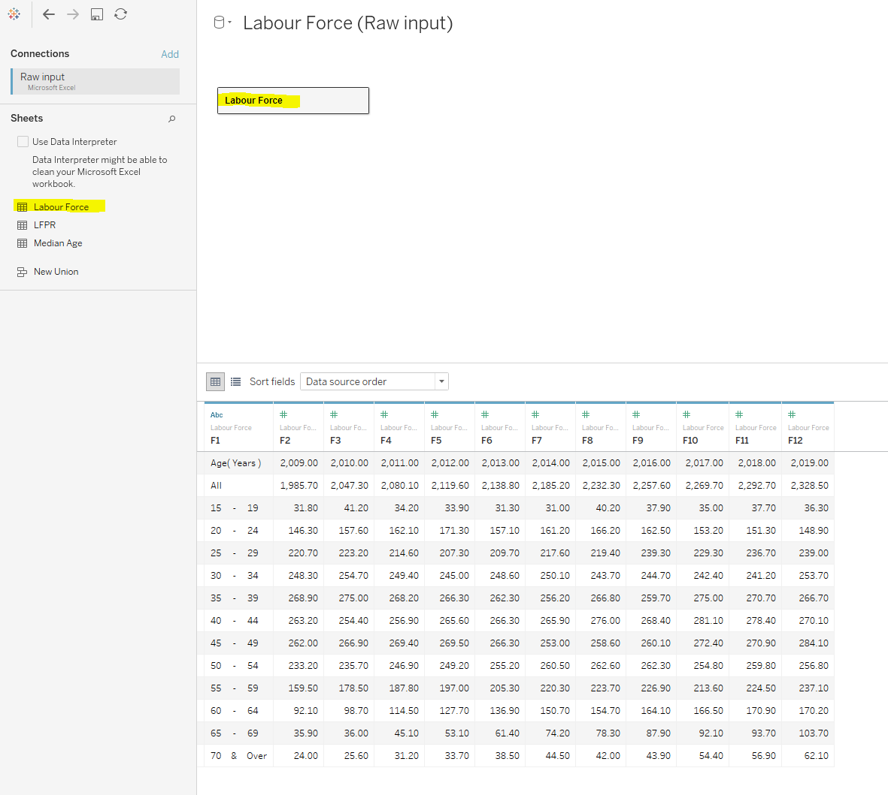

Initial Visualization

Critiquing the Initial Visualization
Clarity
The lead-in statement and visualization are not synchronized. The graph does not bring out the key changes of the labor force highlighted in the lead-in. There is no LFPR data in the graph, only labor force percentages by age buckets. Furthermore, the age ranges described don’t match the age buckets in the graph.
Data is provided as a table below the graph, without any indication of units. This is difficult to read & relate to as a total visualization.
Lack of proper axes and labels - The x-axis is not labeled and there is no y-Axis.
The median age lines are using the discrete x-axis scale (age range) to attempt to represent two continuous data points (median age), which is incorrect & unclear. Furthermore, having these lines intersect with the line graphs does not provide any helpful visual insight.
Aesthetics
- Tick marks are shown even though the x axis is categorical in scale.
- Chart is pixelated - Image quality is not addressed properly.
- It is hard to read the line graph with points representing age buckets.
Suggestions for Graphical Presentation
The following table summarizes the key changes recommended to the initial visualization:
| Aspect | Critique | Recommendation |
|---|---|---|
| Clarity | The lead-in statement and visualization are not synchronized. | Giving priority to the lead-in statement, the data used should consist of both labor force percentages as well as LFPR percentages for the specific age groups identified in the lead-in statement. |
| Clarity | Data is provided as a table below the graph, without any indication of units. | The data should firstly be visually represented as part of the chart and not as a separate table below the chart. Also, there should be clear units of measure stated. |
| Clarity | Lack of proper axes and labels | The chart should have a clear x-axis and y-axis, with appropriate labels and units of measure. There should also be a dual axis to represent the LPFR separately from the labor force percentages. |
| Clarity | Incorrect usage of the median age lines. | There is no need to try force-fitting median age lines on the chart, especially when the axes do not have age as a unit of measure. Providing these two numbers can be done via a simple lead-in statement. |
| Aesthetics | Tick marks are shown even though the x axis is categorical in scale. | Tick marks are not necessary as the x axis is categorical in scale. |
| Aesthetics | Chart is pixelated. | Image quality must be taken into consideration when publishing a visualization. |
| Aesthetics | It is hard to read the line graph with points representing age buckets. | There should be light grid lines on the chart to make it easy for the reader to read the line graphs in relation to the axes. |
Sketch of proposed visualization

Key characteristics of proposed visualization:
- Firstly, the axes need to be properly provided. A dual axis setup is proposed. The first y-axis will show the labor force % while the 2nd y-axis to chart the LFPR %.
- To clearly relate to the lead-in statement, the data in the visualization has to be grouped clearly into the appropriate age range buckets. This will enable the reader to immediately read and relate to the changes described in the lead-in statement for the time window of 2009 to 2019.
- Bars to represent the changes of the labor force percentages of each age group across the years.
- To complement the bars, line graph should be used to show how the LFPR is changing across the years per age group. This will enable visual clarity and bring out the relationship between the two metrics in one glance.
Preparing the Proposed Visualization with Tableau
Data Preparation
- The first observation of the data source is that the table directly downloaded from MOM site is heavily formatted with several merged rows and columns. As such, it is not a good base file to use when importing into Tableau as there will be many null cells cluttered around if we simply drag and drop. Therefore, a basic cleanup of the original source file is far simpler and recommended versus navigating the modifications in the Data Source module of Tableau.
- Secondly, the data Table 5 from the MOM site is not sufficient for us to prepare a visualization that can bring out the trends stated in the lead-in statement. We will require Table 7 as well from the same site, and this was downloaded.
- Finally, both Table 5 and Table 7 were cleaned and copied into a new excel file named “Raw Input” as separate tabs. Main formatting work done was to unmerge the formatted rows and columns to create clean data tables as such:


Importing the Data into Tableau
After opening Tableau desktop, the Raw Input file was imported in. Following this, the Labor Force tab is first dragged & dropped into the logical tables panel:
 We immediately notice that the column headers are not captured correctly. This is because the data in the raw input file is not aligned to the first row/column. This is easily fixed by checking the “Use Data Interpreter” box on the left to obtain the following:

Next, we drag in the LFPR table. Upon doing this, Tableau will prompt us to link up the LFPR logical table with the Labor Force table that is already present in order to form the relationship. Here, we select the Age (Years) data column as the common link, and doing so will reveal the LFPR table (with a relationship established to the Labor Force table:

Now that we have brought in the data into Tableau, it is time to structure it in a suitable manner to help us create the right visualization easily.
Structuring the Data for analysis
First, we pivot all the individual year columns by selecting them simultaneously and using the Pivot option from the small drop down on the headers:
 The result is a pivoted table where each row now has an age bucket, the Year and the Labor Force population pertaining to that Age bucket and year. We then re-label the newly formed columns as well as adjust the data type of the Year column to “Date”:
The result is a pivoted table where each row now has an age bucket, the Year and the Labor Force population pertaining to that Age bucket and year. We then re-label the newly formed columns as well as adjust the data type of the Year column to “Date”:
 Recall that we want to categorize the age bucket into three distinct groups that are consistent with the information in the lead-in statement. To do this, we use the drop down list on the Age(Years) column and choose the “Create Group” option:
Recall that we want to categorize the age bucket into three distinct groups that are consistent with the information in the lead-in statement. To do this, we use the drop down list on the Age(Years) column and choose the “Create Group” option:
 Once inside the Group editor, we highlight multiple age buckets that we want to group together, and then press “Group” button, followed by renaming the Group to a suitable name, as shown here:
Once inside the Group editor, we highlight multiple age buckets that we want to group together, and then press “Group” button, followed by renaming the Group to a suitable name, as shown here:

After this, we click “Apply” and press “OK”. We now see that a column of Groups is successfully created:
 These groupings will help us to create the visualization very easily later on. Moving on, the same steps of Pivoting and Grouping of Age buckets and performed on the LFPR table and this gives us the result:
These groupings will help us to create the visualization very easily later on. Moving on, the same steps of Pivoting and Grouping of Age buckets and performed on the LFPR table and this gives us the result:

The next step that is required now is to link up the “Year” and “Year (Lfpr)” columns via the matching in the Logical Table:
 Finally, we will need to filter away the “All” Grouping of the age buckets so that it doesn’t come in the way of creating the Visualization later. To do this, we simply click on the “Add” button under Filters in the top right and configure “All” grouping to be excluded for both tables:
Finally, we will need to filter away the “All” Grouping of the age buckets so that it doesn’t come in the way of creating the Visualization later. To do this, we simply click on the “Add” button under Filters in the top right and configure “All” grouping to be excluded for both tables:

We are now ready to create the visualization.
Creating the Base Visualization
First, we drag in the “Age Years (Group)” as Column, “Year” as Column and “Population (’000)” as Row to get a basic skeleton:
 Now, we add in the “LFPR(%)” Data as a second Y Axis into the visualization using the “Dual Axis” option:
Now, we add in the “LFPR(%)” Data as a second Y Axis into the visualization using the “Dual Axis” option:
 The output will look like this:
The output will look like this:

Notice that the axis are not in the intended units that we would like. Therefore, we first amend the Population Axis using a Table calculation to show the percentage of total labor force for each data point. Note that we need to use “Specific Dimensions” setting and un-check the “Year of Year” option in order to correctly calculate the % of labor force within the Age Groupings:
 Next, it is time to adjust the LFPR. Notice that by default, the axis values are under the “SUM” calculation. This needs to be changed to “AVERAGE” to correctly show the LFPR percentages within each age group by Year:
Next, it is time to adjust the LFPR. Notice that by default, the axis values are under the “SUM” calculation. This needs to be changed to “AVERAGE” to correctly show the LFPR percentages within each age group by Year:
 We now see that the basic data is in place and showing correctly:
We now see that the basic data is in place and showing correctly:
 It is now time to apply some Visualization fundamentals to enhance the aesthetics of the chart and make it easy to read for the audience.
It is now time to apply some Visualization fundamentals to enhance the aesthetics of the chart and make it easy to read for the audience.
Beautifying the Visualization
Firstly, the following are performed:
- X-axis is formatted to show the Year numbers horizontally.
- Both X & Y Axes are formatted to increase font size & Bold.
- The Age bucket labels are also formatted to increase font size & Bold.
- The “Age (Years)(Group)” Label is kept hidden
- The Labor Force population data is switched to a Bar chart visualization, while the LFPR data is selected as a Line chart.
- “Age (Years)(Group)” and “Age (Years)(LFPR)(Group)” are dragged and dropped onto the Color marks to enable color customization of all Bar groups & Lines individually.
Thus far, we have the following visualization:  Next, the following fine modifications are made in order to to make the visualization more appealing:
Next, the following fine modifications are made in order to to make the visualization more appealing:
- The LPFR Lines are adjusted to have line markers, and their size is adjusted lower to keep it easier on the viewer’s eyes
- The LFPR line labels are turned on, but only for the ends. This will reveal the LFPR changes that is directly linked with what the lead-in statement mentions.
- The Opacity of the Bars are adjusted down to 80% to soften the look. Light color borders are added.
- The size of the Bars are adjusted down slightly to mitigate the overpowering look of many thick bars.
After performing these changes, the visualization will look as such:

To finish up the visualization, the following final touches are made:
- The color scheme of the bars is adjusted as close as possible to the qualitative color scale of ggplot2 hue.
- The chart is given a Caption, which includes the title, a short explanation of the visualization and the data source details.
Final Visualization
Here is the Final Visualization at the end of the Makeover process:

Key Observations revealed by the Visualization
For the labor force aged 24-52, the Labor Force Participation rate has increased through 2009 to 2019, but their population is decreasing as a portion of the total labor force. This is most likely due to the slower influx of residents with ages 15-24 into the 24-52 group versus the outgoing population into the “55 and above” bracket.
The percentage of the labor force aged 55 and above has been steadily increasing from approximately 40% in 2009 to 50% in 2019. This is a clear indicator of an aging population.
The percentage of the labor force aged 15 to 24 has generally been slowly decreasing from ~9% in 2009 to below 8% in 2019. This points to a slowdown in the birth rate in Singapore. This would also explain the flat LFPR trend of this age group.
References
- Tableau Help Guide - https://www.tableau.com/support/help
- Fundamentals of Visualization - https://clauswilke.com/dataviz/
- YouTube guide for Tables - https://www.youtube.com/watch?v=a0rM8wAp4U0
- Table 5: RESIDENT LABOUR FORCE PARTICIPATION RATE BY AGE AND SEX, 2009 - 2019 (JUNE) - https://stats.mom.gov.sg/Pages/Labour-Force-Tables2019.aspx
- Table 7: RESIDENT LABOUR FORCE PARTICIPATION RATE BY AGE AND SEX, 2009 - 2019 (JUNE) - https://stats.mom.gov.sg/Pages/Labour-Force-Tables2019.aspx